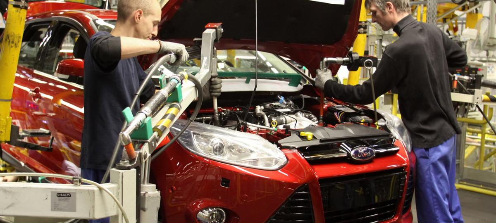

Are fossil fuel cars really ruining the ecosystem and causing global warming?
The science proves us now that unfortunately this is true.
Diesel and gasoline engines have the biggest environmental footprint with toxic emissions immediately harmful to humans
Dirty cars, dirty air
Cars, trucks, and buses powered by fossil fuels are major contributors to air pollution.
In fact, transportation emits more than half of nitrogen oxides in our air, and is a major source of global warming emissions in the US.
Studies have linked pollutants from vehicle exhaust to adverse impacts on nearly every organ system in the body.
The ingredients of air pollution
Cars, trucks and buses produce air pollution throughout their life cycle, including pollution emitted during vehicle operation and fuel production.
Additional emissions are associated with refining and distribution of fuels and to a lesser extent, manufacturing and disposal of the vehicle.
Types of emissions:
Petrol NOx
Diesel NOx
Diesel PM
Euro standard
Introduction date
Emission limits
Euro-1
1992
0.97g/km
Euro-2
1996
0.5g/km
Euro-3
2000
0.15g/km
Euro-4
2005
0.08g/km
Euro-5
2009
0.06g/km
Euro-6
2014
0.06g/km
Passenger vehicles are a major pollution contributor, producing significant amounts of nitrogen oxides, carbon monoxide, and other pollution.
In 2013, transportation contributed more than half of the carbon monoxide and nitrogen oxides, and almost a quarter of the hydrocarbons emitted into our air.

Solutions are here
Clean vehicle and fuel technologies provide us with an affordable,
available means of reducing transportation-related air pollution and climate change emissions.
These include fuel-efficient vehicles that use less oil;
cleaner fuels that produce fewer emissions; and electric cars and trucks that can entirely remove tailpipe emissions.
The future is electric, and is closer than you think!